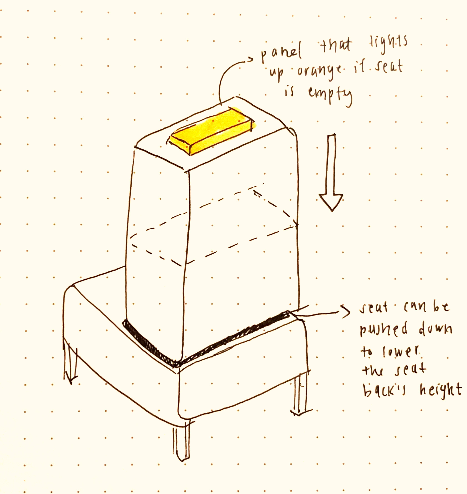
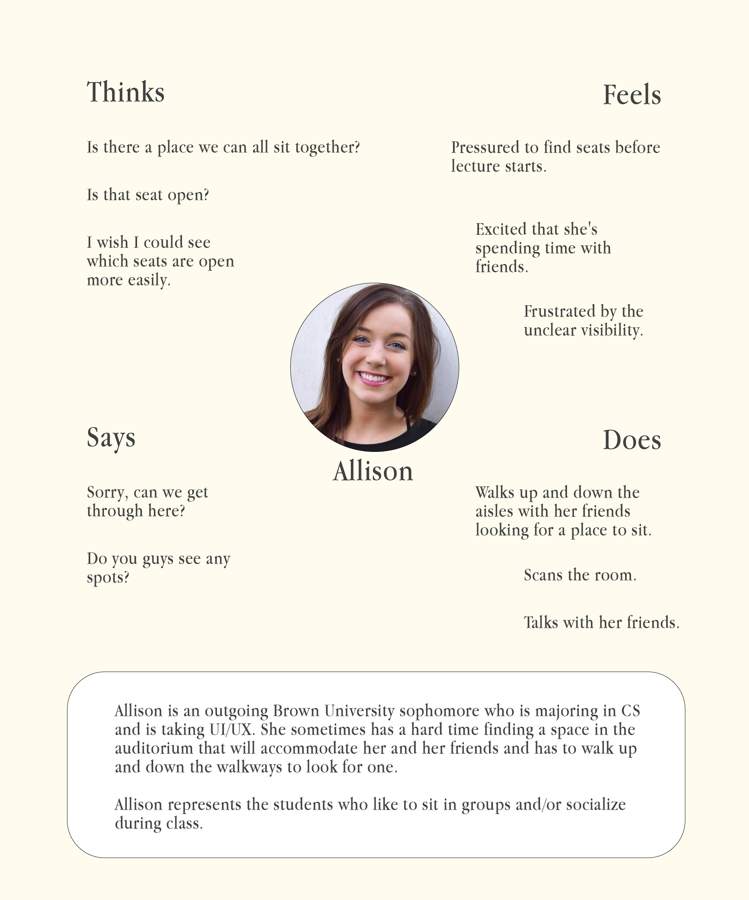
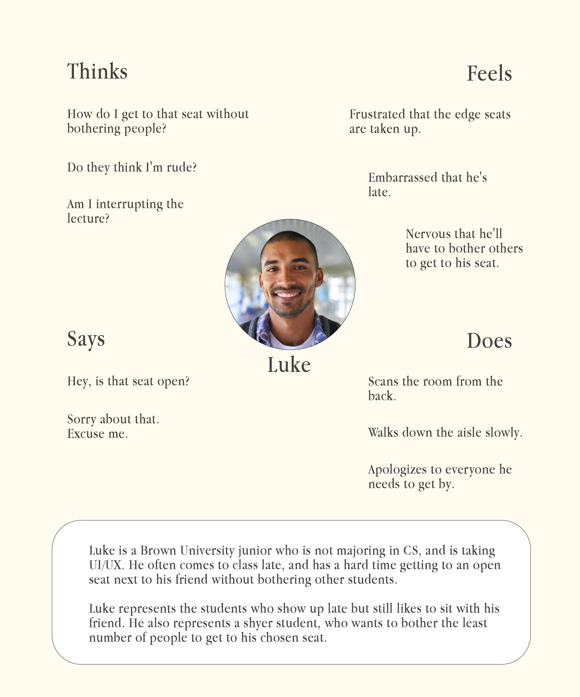
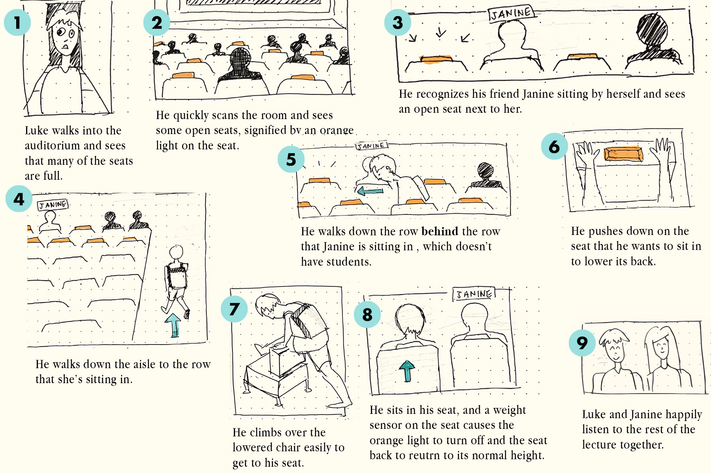

Redesigning Solomon Chairs
Issue: Through observation and personal
experience, I've noticed that people tend to have a hard time navigating auditorium chairs to get to
their desired seats, especially when the auditorium is somewhat full. This is a dilemma that anyone
who has attempted to navigate through the legs of already-seated people are very familiar with.
Objective: By using methods such as observation and interviewing and using the accumulated data to create personas, I set out to
devise a new design for auditorium chairs, specifically for Solomon DECI. This new interface would
theoretically help to solve many issues that auditorium-goers frequently face.

The solution: This design is the re-imagined auditorium chair. It includes a light panel on top of the seat back that lights up orange when the seat is open (sensed by a weight sensor). The back of the chair can be pushed down into the base of the chair in order to lower the height of the seat. This chair design would allow for quicker analysis of open and taken seats, giving the user a better sense of which chairs are the most easily accessible, and would also give more flexibility in their route to the chair, as they can move over empty seats rather than going through seated people.
Observations
- People often come in alone and sit down alone, come in alone and meet up with a seated friend, or come in groups (usually 2 or 3) and sit together.
- Behaviors start to differ slightly as the auditorium fills up:
For people who came alone, they will often sit in the middle of rows without hesitating, but as the auditorium fills up they will stick closer to the outer edges of rows (near walkways).If the auditorium is somewhat full, groups will hesitate a bit to find a seat that accommodates the size of their group, so they can all sit together. - When the auditorium is relatively full, people will often have to get up from their seats or lift their legs up in order to allow people through.
- People often sit at least 1-2 seats apart from people they don't know.
- People with more stuff (bigger bags, skateboards, etc.) tend to sit on the edge of the row.
- The first 5 or so rows stay relatively empty (fewer than half of the seats filled).
Interviews
I interviewed three users, A, B, and C, to gain more insight into users' thoughts and opinions when interacting with the auditorium chairs.
What do you typically carry with you when attending an event or lecture in the auditorium?
- A: "I just bring a laptop with me in a backpack. I bring smaller items like keys and a wallet that fit in my backpack,too."
- B: "I bring my laptop and a notebook and pencil. I bring them in a backpack, medium-sized."
- C: "I carry around a notebook and pencil case in a tote bag. Sometimes I have my water bottle."
- A: "I guess I like that we have the small little desk that's attached to the chairs? I think also since the chairs are on an incline it's easy for everyone in the room to see what's happening."
- B: "The attached desk is handy, even though it's a little small."
- C: "I like that there are a lot of them. So you don't always have to sit next to a stranger if you don't want to."
- A: "I come to learn, but honestly I really like spending time with my friends here."
- B: "I come to learn in class. I like to pay full attention"
- C: "To learn."
- A: "On time, alwayssss."
- B: "I usually get here pretty on time."
- C: "Like a few minutes late? Maybe up to five minutes."
- A: "I don't really like sitting in the front. 'Cause I like sitting with my friends, I don't want to distract other people."
- B: "I just try not to sit too close to strangers. I don't want to make anyone feel weird."
- C: "It depends but if there aren't that many seats left I just try to choose edge seats so I don't have to bother a bunch of people getting there."
- A: "I don't know, I guess anywhere that wouldn't fit the number of people I'm with? Or, like, seats that would be too hard to get to when there's a lot of people."
- B: "I don't like sitting near groups that talk a lot."
- C: "I don't choose seats that are hard to get to. Like, seats that would require me to ask a lot of people to move."
Personas
Allison and Luke are two personas that were devised using the information accumulated during the observation and interviewing processes.


Storyboard
The storyboard below is based on Luke's persona. It depicts what his interaction with the re-imagined auditorium chairs might look like.
